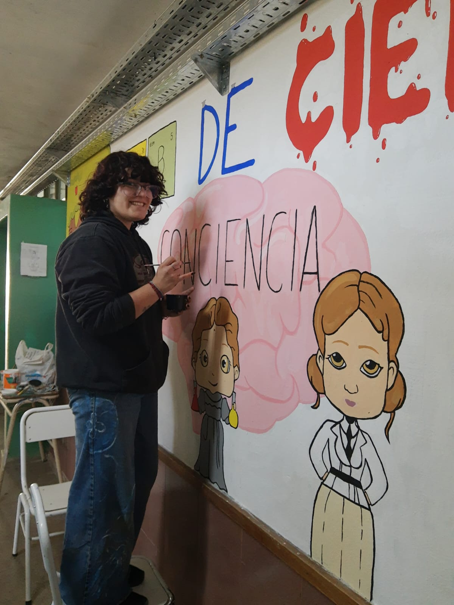
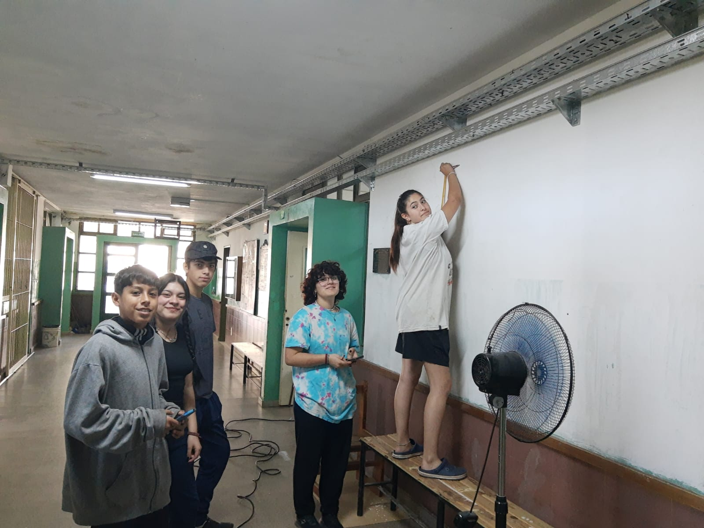

O mural do Club ConCiencia representa o espírito creativo e colaborativo dos estudantes. Está en constante crecemento e reúne expresión artística, identidade institucional e mensaxes que inspiran a toda a comunidade educativa.

